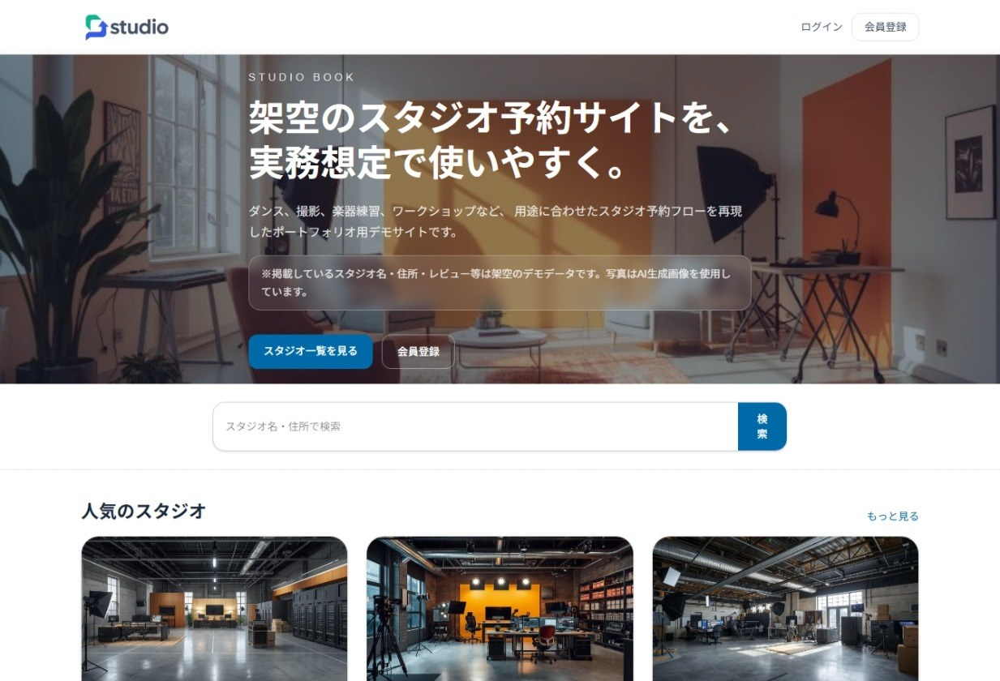
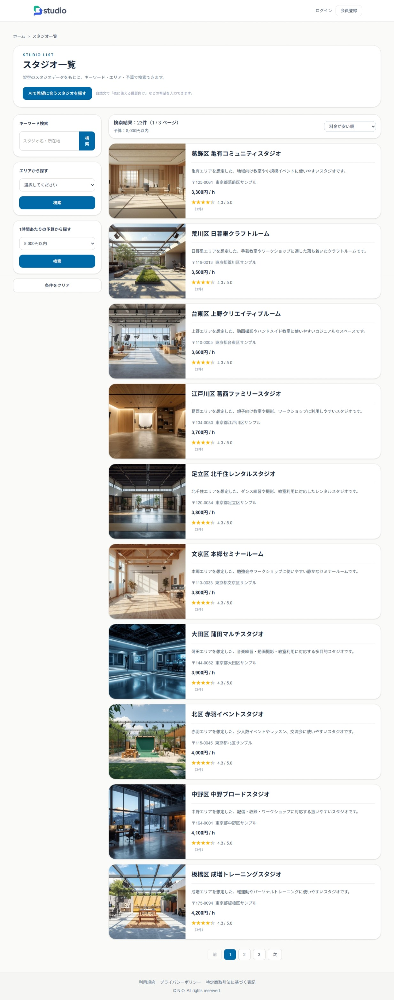
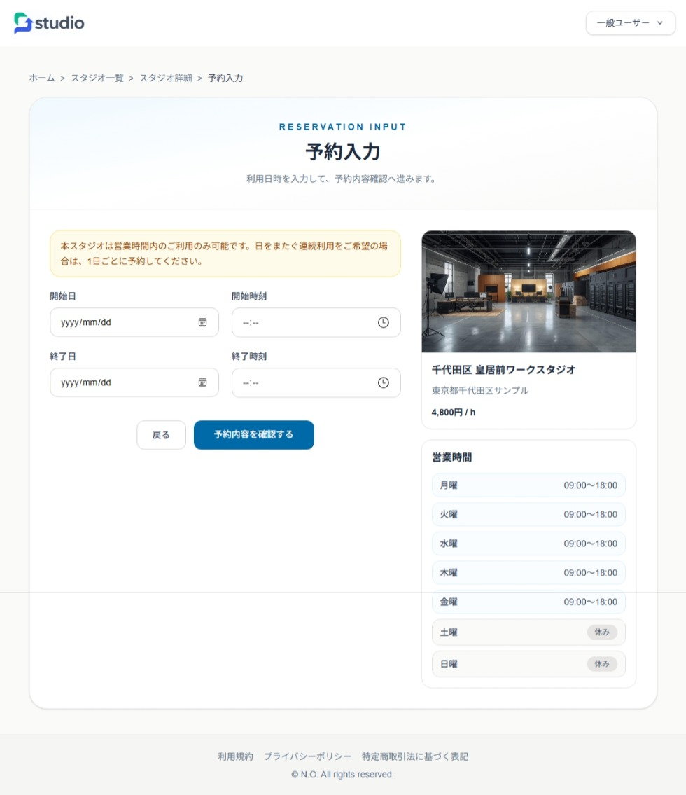
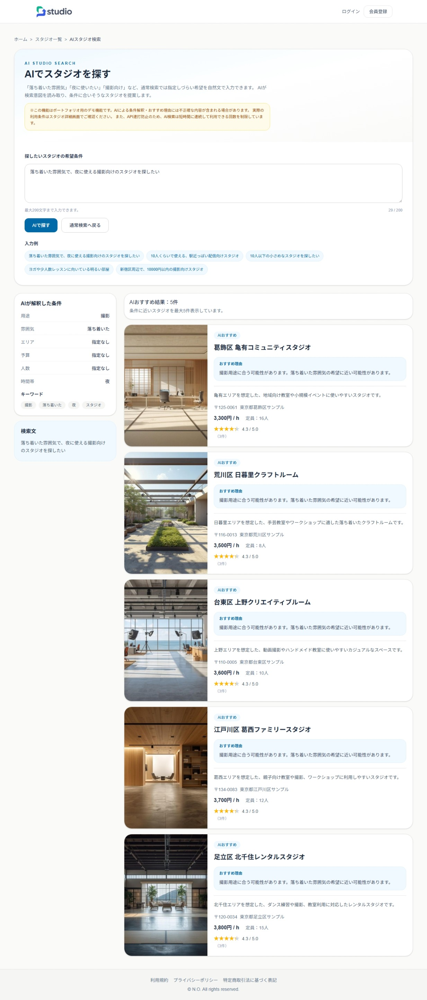
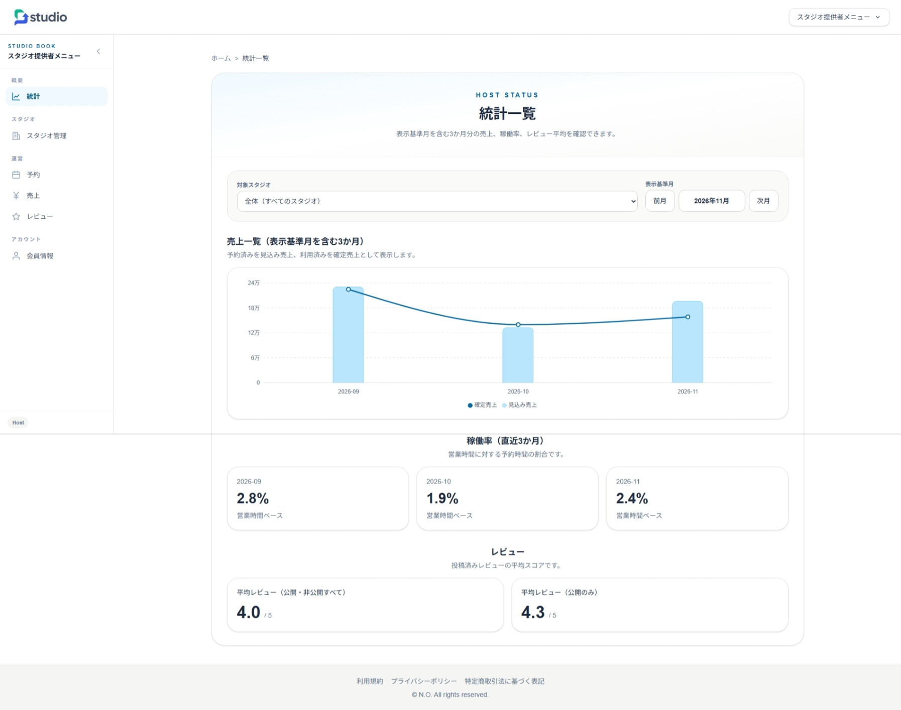
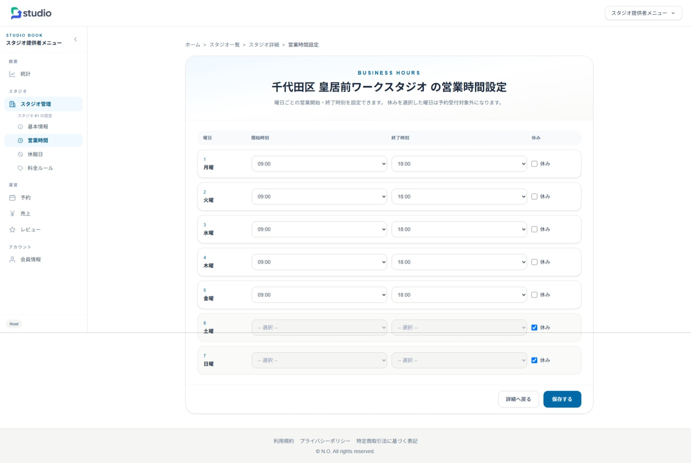
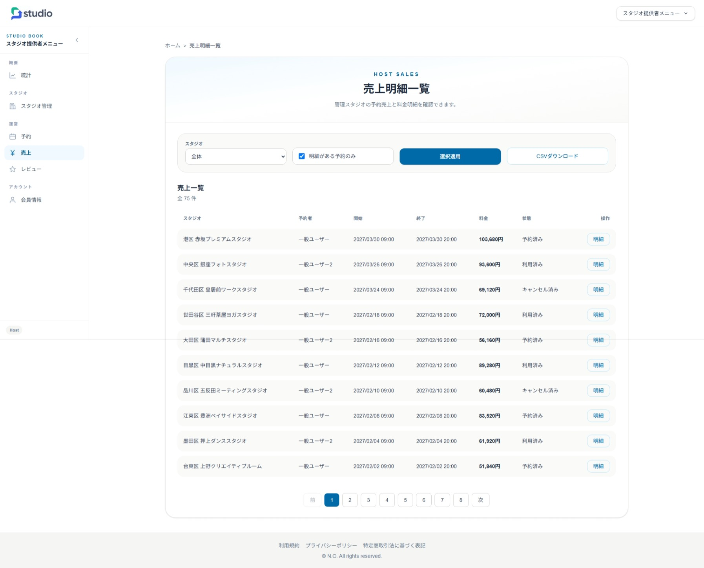
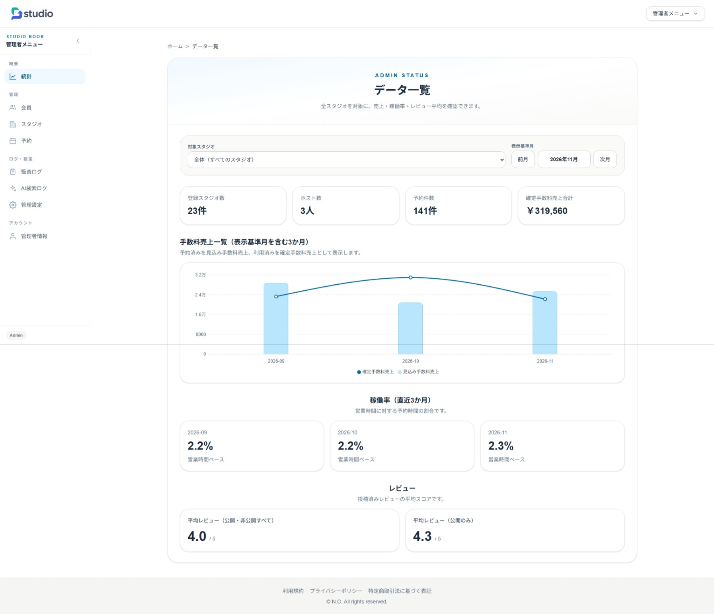
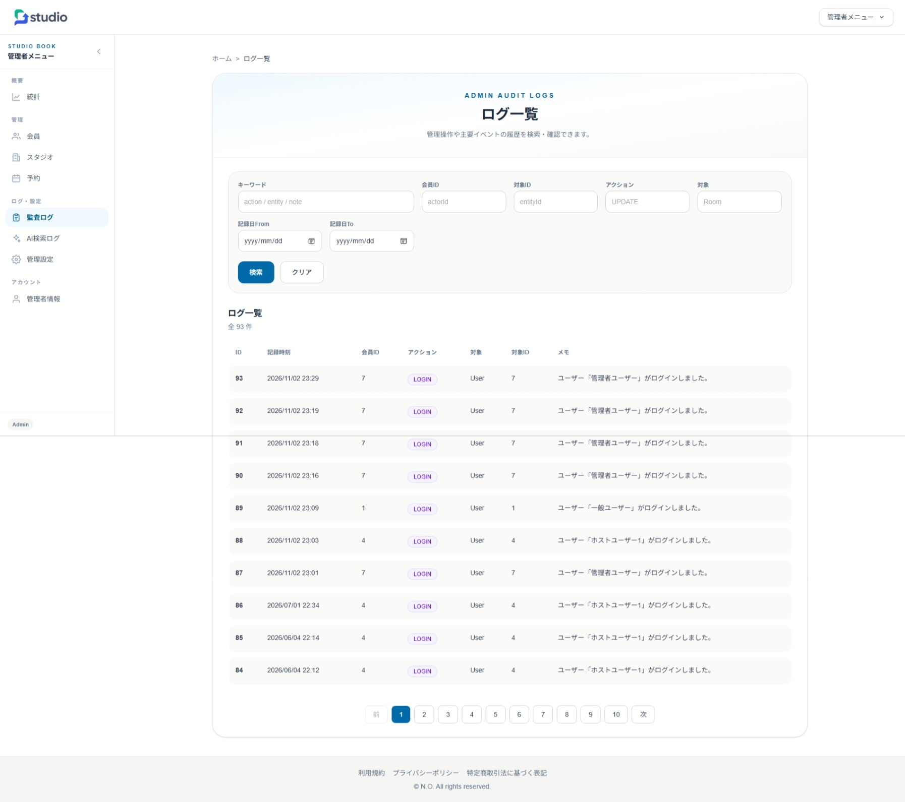

バックエンド
- C# / ASP.NET Core（.NET 10 / Web API）
- Entity Framework Core
- JWT Bearer認証 / ロール認可（GeneralUser / Host / Admin）
- Stripe API / Webhook（決済結果反映）
- QuestPDF（PDF出力）
- OpenAI API連携（AI検索・レビュー補助）
施設・時間枠予約管理を題材にした、ASP.NET Core Web API + Next.js のフルスタックWebアプリです。
予約対象をスタジオとして実装し、施設検索から利用日時の選択、予約・Stripe決済までを扱います。
ホストは営業時間・休館日・料金・予約・売上・レビューを管理でき、
管理者はユーザー・施設・予約・設定・監査ログ・AI検索ログを横断管理できます。
バックエンドは Domain / Application / Infrastructure / Api のレイヤに分離し、
認証・認可、API・DB設計、テスト、CI/CD、クラウドデプロイまで個人開発で実践しています。
※フロントエンドは Vercel および Azure Static Web Apps、バックエンド API は Heroku 上で動作する構成です。
※デモ環境の状態により、初回アクセス時に起動待ちやAPI応答待ちが発生する場合があります。
※掲載しているスタジオ・ユーザー・予約データは、すべて架空の検証用データです。
※決済連携は Stripe の Test Mode を使用しており、実際の請求は発生しません。

最新の画面から主な業務フローを抜粋しています（画像クリックで全体を表示）。
一般ユーザー、ホスト、管理者それぞれの業務フローを想定して実装しています。

条件を指定して予約対象のスタジオを探し、詳細・利用料金を確認します。

利用日・時間枠を指定し、営業時間や休館日などの制約を踏まえて料金と予約内容を確認します。

OpenAI APIと連携し、文章からスタジオ検索を補助します。

担当施設の売上・稼働状況・レビューを集計し、運営状況を可視化します。

スタジオごとの営業時間を設定し、予約可能な時間帯の管理につなげます。

売上一覧・詳細を確認し、CSV／PDFの帳票出力にも対応しています。

全体のスタジオ・予約・手数料売上などを確認する運営管理画面です。

管理画面で操作・変更履歴を検索・確認できるようにしています。
※現在の実装はスタジオを対象としています。会議室・練習室などへの応用には、施設属性や料金・予約条件の追加設計が必要です。
フロントエンドとバックエンドを分離し、 Next.js から ASP.NET Core Web API を呼び出す構成にしています。 バックエンドは Domain / Application / Infrastructure / Api の4レイヤに分離しています。 認証はJWT Bearerを利用し、一般ユーザー、ホスト、管理者のロールに応じて 利用できる画面・APIを分けています。
Next.js Frontend
→ Api (Controller / JWT)
→ Application (Use Cases / DTO)
→ Domain (Entities)
→ Infrastructure (EF Core / External APIs)
→ MySQL
Stripe Webhook → Reservation / Charge ItemsREADME、ER図、画面構成図、認証フロー、予約・決済フローなどを GitHub上のドキュメントとして整備しています。
テスト・CI/CD・デプロイ構成は、READMEおよび docs 配下の構成図に整理しています。
スタジオ予約として具体化した設計であり、他業種への対応を完成済み機能としては扱っていません。
要件定義・基本設計・詳細設計・アーキテクチャ資料もGitHubで公開しています。
デモサイトとソースコードは下記からご覧いただけます。
Vercel デモサイト：
https://studio-book-dotnet-next.vercel.app
Azure デモサイト：
https://gray-bush-08e107700.7.azurestaticapps.net/
GitHub リポジトリ：
https://github.com/fewioaghwrao/studio-book-dotnet-next